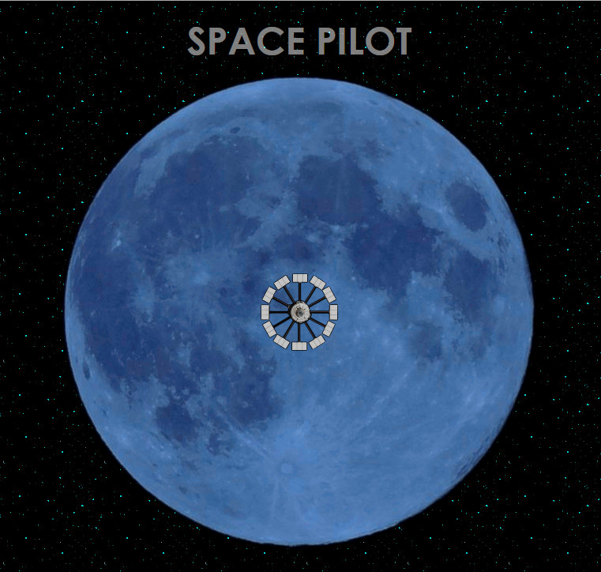
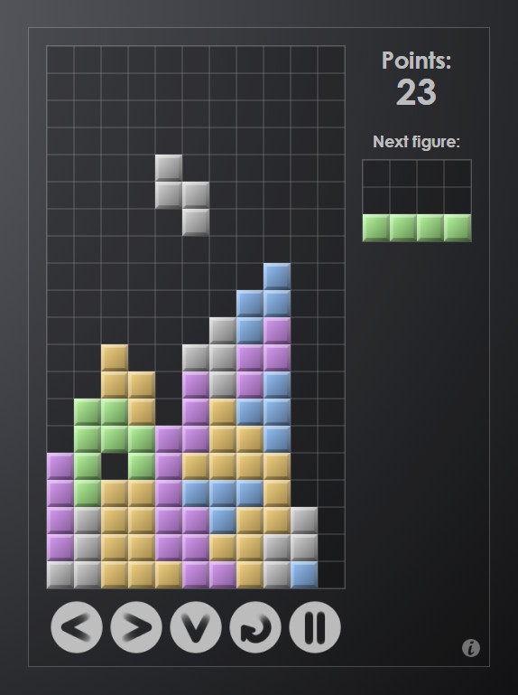
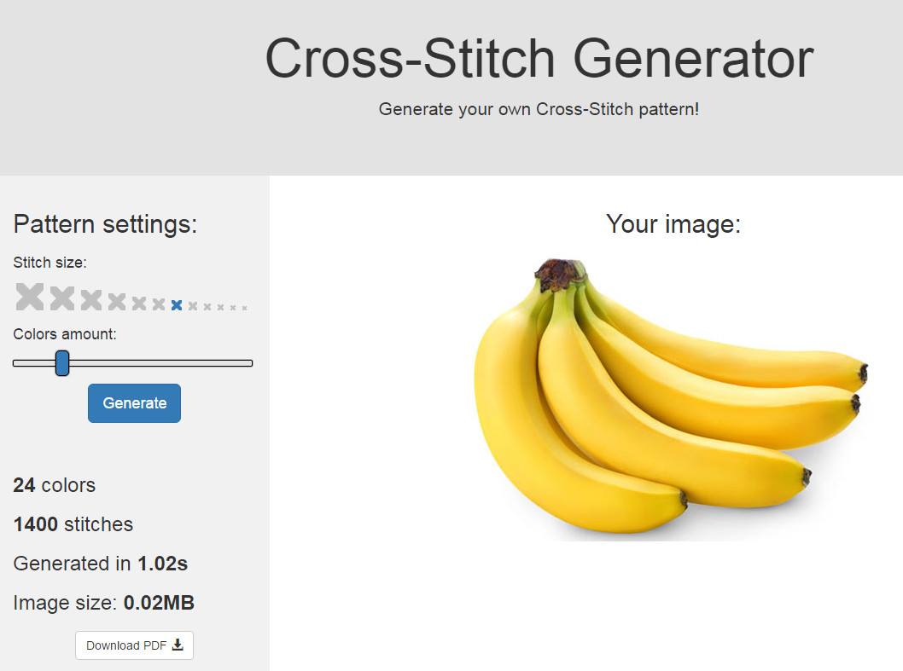
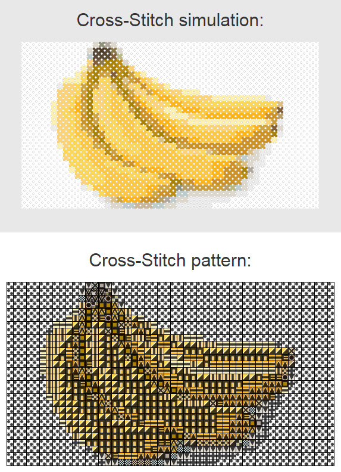
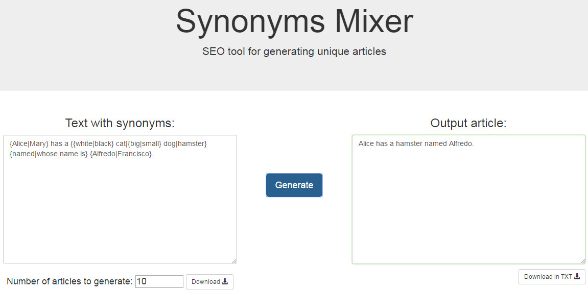

Kamil Podlasek.pl
Front-End/Full-Stack Developer
Kliknij interesujący Cię projekt lub dział na klawiaturze poniżej.
Gra w której zadaniem gracza jest utrzymanie sondy kosmicznej w atmosferze księżyca.
Sterowanie odbywa się za pomocą myszy, gracz ma za zadanie odbijać sondę kursorem.
Z każdym kolejnym poziomem gracz dostaje więcej punktów, a każde odbicie powoduje przyspieszenie sondy.
Użyte technologie:
- HTML5
- CSS3
- JavaScript
- jQuery
- PHP
- AJAX
- MySQL

Przeglądarkowa wersja słynnej gry "Tetris".
Gracz ma za zadanie tak kierować spadającymi klockami, żeby tworzyły pełne rzędy które następnie są usuwane.
Rozgrywka kończy się w momencie, gdy nowo powstały klocek koliduje z pozostałymi kostkami.
Użyte technologie:
- HTML5
- CSS3
- JavaScript
- jQuery

Generator haftu krzyżykowego - aplikacja generuje wzór do haftu krzyżykowego z dowolnego zdjęcia.
Wzór gotowy do druku wraz ze spisem nici marki DMC potrzebnych do wyszycia obrazu można pobrać w formacie PDF.
Użyte technologie:
- HTML5
- CSS3
- Bootstrap
- JavaScript
- jQuery
- PHP
- Biblioteka GD (PHP)
- Biblioteka FPDF (PHP)
- AJAX


Mikser synonimów - aplikacja pozwalająca na wygenerowanie dowolnej ilości artykułów z synonimizowanego tekstu i pobranie ich.
Narzędzie szczególnie przydatne dla osób zajmujących się pozycjonowaniem stron internetowych.
Użyte technologie:
- HTML5
- CSS3
- Bootstrap
- JavaScript
- Biblioteka JSZip (JS)
- jQuery

O mnie
Nazywam się Kamil Podlasek, urodziłem się pechowego dnia - 29 lutego 1996 roku. Tak, mam urodziny co cztery lata.
Ukończyłem klasę o profilu matematycznym w I Liceum im. Bolesława Chrobrego w Pszczynie, a aktualnie studiuję Informatykę na Wydziale Matematyki Stosowanej Politechniki Śląskiej.
Tworzę strony i aplikacje internetowe, zajmuję się zarówno front, jak i back-endem.
W projektach używam takich języków i technologii jak HTML5, CSS3, Bootstrap, JavaScript, jQuery, PHP, AJAX, MySQL czy Git, oraz stosuję się do zasad RWD i UI/UX.
Każdy tworzony przeze mnie design musi być "pixel-perfect".
Ponadto bez przerwy poznaję coraz lepsze sposoby na tworzenie coraz lepszych rzeczy.
Jestem minimalistą i perfekcjonistą, co staram się przekładać na tworzony przeze mnie kod.
Pasjonuję się piłką nożną i muzyką.
Poza kibicowaniem i słuchaniem samemu kopię i grywam na instrumentach, głównie na gitarze basowej.
Ponadto lubię czasem coś ugotować - moja pizza i lazania znalazły sobie już kilku zwolenników (chyba, że nie chcieli żeby mi było przykro).